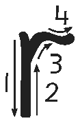

A picture of an illustration of rat, the example word for this letter lesson.rat
Trace the letter r or write dot one, dot two, dot three, and dot five.

A picture of the stroke-direction diagram for lowercase r. Follow the numbered arrows. Draw a short downstroke, return to the top, then curve over to the right to form the shoulder.